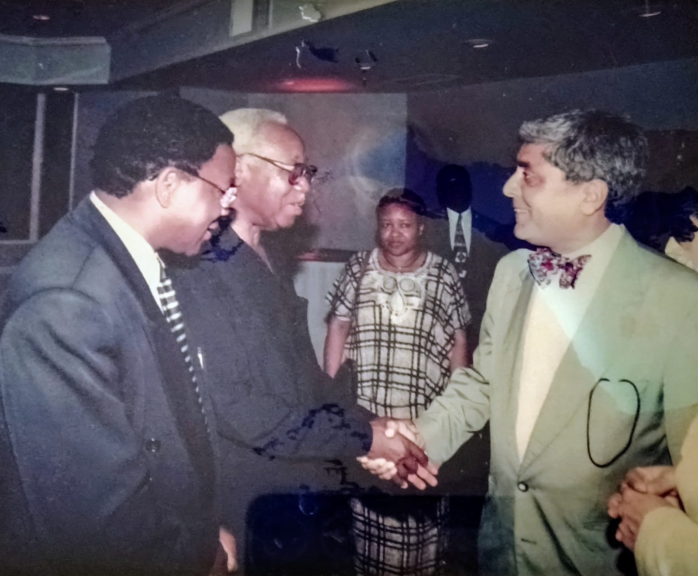

Meeting former President Julius Nyerere of Tanzania, during his visit to Ottawa, Canada.
On left is late Bernard Membe, a member of the diplomatic staff at the High Commission of Tanzania to Canada, who later served as Tanzania's Foreign Affairs Minister. 🇨🇦 🇹🇿